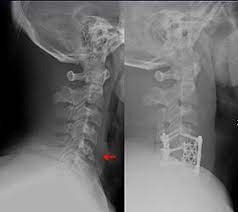

Krishan Patel
My name is Krishan Patel as shown on my resume here. I am a recent graduate of the UCR medical school institution. I completed my residency and fellowship at UCLA and became a certain specialist in Orthopedic Surgery.
I am now out in the work force after the several years of school and looking for a job. My ideal prfeerence would be to begin work in an established institution like Kaiser. I have seen over the years that Kaiser has many benefits when it comes to employee care but also one of the leading hopsital organizations across the US. Over tie however my goal would be to find one or two partners and begin my own private practice with them. Allowing me to expand on my own and take on a new challenge.
At the moment if anyone knows any openings and or is interested in joing with me to start a private practice my best method of contact is via phone and or email. My phone number is 999-999-9999. My email is ppate122@ucr.edu. I look forward to meeting new people with new opportunites and beginning my career in the medical field.
Experience
Orthopedic Medical Tech
• Medical assistant for an orthopedic surgeon setitng up equipment presurgery.
• Worked as a medical scribe in the orthopedic clinical section for Kaiser
• Took an intership in Florida where i worked in the surgical room with the
OC Wine Mart
• Management and ran the entire store.
• Made sure all accounts where checked properly and delegated tasks to certain people showing leadership.
Tutor
• Ran sessions to help students learn how to perform medical sutures and set up medical trays.
• Taught students basic medical knowledge like how to sterialize certain tools.
• Created educational content to help guide and encourage the sutdents on joing the medical field
• Let the kids have an open mind at the end of the day and yet I retained 90 percent of the students who have now set themselves on the right track for medical school.
Education
UC Riverside
University of California Riverside
University of California Riverside
Portfolio
